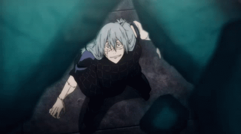
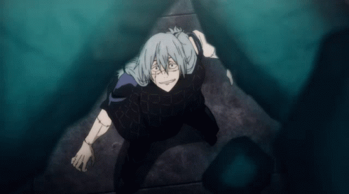

Nanami Kento
Nanami image gallery


7:3 (Ratio Technique)
 

The user of this technique can mark their target's body with lines divided into tenths. If the user is able to strike one of these lines on exactly the seven-to-three ratio point, they deliver a critical hit to the subject. This allows them to deal significant damage on tougher adversaries and cleave weak opponent's in two in a single hit.
Black Flash
Black Flash is a phenomenon in jujutsu that greatly amplifies the user's physical strike when cursed energy is applied to it within one-millionth of a second.
Nanami compares using Black Flash to being "in the zone", the state of elite focus and feeling of being at the center of everything that professional athletes experience while in a game. Nanami's record four consecutive Black Flashes were against cursed spirits during the Night Parade of a Hundred Demons in Kyoto. Despite holding this record for over a year Nanami accredits it to getting lucky.